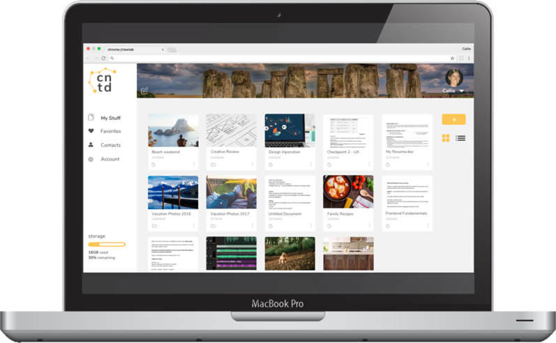

Connected is a cloud-based storage application that offers users an intuitive interface to store data, dashboard personalization and strong connection to collaborators.
Problem: How could I design a cloud storage solution that would be a compelling alternative to popular competitors such as Google Drive and DropBox?
Solution: An easy to use desktop and mobile application for people wanting to save and collaborate on content. The application features an intuitive and visually appealing interface, a series of collaboration options, and dashboard personalization.
The cloud storage market is filled with top notch competition: Google Drive, DropBox, Box, and more. The challenge was to create a new tool that could stand up to the competition. There were four potential opportunities for connected based off of where the competition seemingly fell flat:
Next, I conducted user research to find out what users really needed and wanted to work their best. Testing early on in the process, and ensuring a subset of the respondents were users of the competition, allowed me to position connected in a way that directly resolved major pain points.
of respondents were Google Drive users
chose their tool based on amount of free storage
say it's important to have ability to organize files into folders
say file sharing within the app is most crucial collaboration tool
Users think things could be improved, such as…
Users use their tool of choice because of…
Overall, there were no clear trends in the data that suggested users were entirely unhappy with their current tool. My challenge was to then focus on important points respondents made in the survey, and build a product that met those needs in addition to what the market was lacking.
Given the similarity in many responses across survey questions, it made sense to create one broad user persona to highlight the pain points and goals for the potential users.
Because connected would be a minimum viable product, I included functionality that met all of the high and some medium priority tasks within the user stories to prioritize items in the tool for the landing page, sign up/login pop ups, dashboard, and the in dashboard document.
User flows were then created for each high priority task to ensure that the mockups included each needed process. View all.
User flow completed in Draw.io
Next, I sketched low fidelity wireframes to match each user flow, and transferred those sketches into myBalsamiq. Usability tests were conducted on these wireframes, which helped identify items needing change early on. Some of these items included:
Early low fidelity wireframes made in myBalsamiq
Two of the most important items for connected’s brand identity was personality and simplicity. The company was meant to be approachable and have a casual, fun tone of voice. The point of portraying these characteristics was to jump on the opportunity in the market that the competitors had missed - to focus on the user’s individuality.
Two of the most important items for connected’s brand identity was personality and simplicity. The company was meant to be approachable and have a casual, fun tone of voice. The point of portraying these characteristics was to jump on the opportunity in the market that the competitors had missed - to focus on the user’s individuality. I iterated on these ideas through mind mapping and listmaking. Soon after, the headline for connected came together in my mind to cover all users needs:
connected
to others, your unique way of working,
and the world of data around you.
Mind mapping and list making
While developing the logo, I thought about startup culture, and about the casual nature of using all lowercase letters and abbreviations. After several sketches, I settled on a box-like look featuring 4 letters “c” “n” “t” “d” for connected.
There were several more iterations once I got into Sketch.
Early logo sketches
Logo iterations made in Sketch
With wireframing complete, I began producing high fidelity wireframes. During this process, I came across something of a branding identity crisis, first having settled on one logo/color palette and realizing myself (and with feedback from others) that the look was not working or matching what the brand was supposed to be all about.
It was crucial during this period to test users to gather feedback on both the user experience of the site but also the design.
High fidelity mockups in Sketch
View of dashboard home in grid layout with personalized background
I conducted three usability tests after completing my prototype to ensure that the site was easy to navigate. I asked users to:
Two issues needed to be addressed in the redesign:
Login process before usability test
Login process after usability test
There were a few other items specifically related to visual design that I was compelled to update after preference testing:
In the end, connected succeeded in being an intuitive cloud storage product with unique branding personality. Users were able to easily navigate the website during late user testing, and appreciated the personalization of the dashboard.
User testing was crucial in this project. Watching how users navigated the site proved invaluable and compelled me to make several changes to the user experience and also visual design of the site.
This process forced me to grow as a designer. After thinking I had an almost finished product in the branding stage, I scrapped the idea and followed the path that was more aligned with the branding identity through user testing and designer feedback.